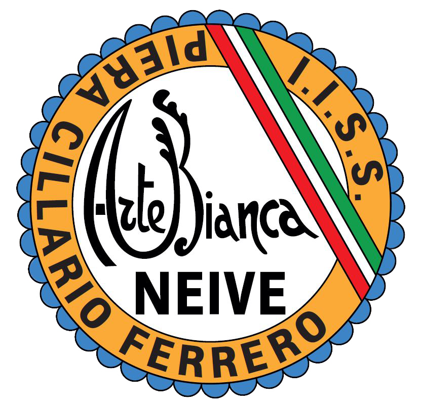
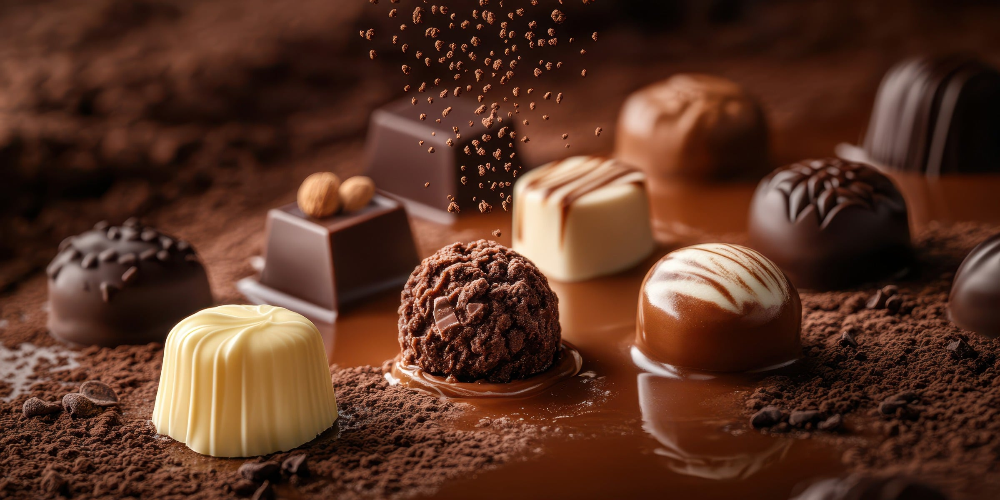
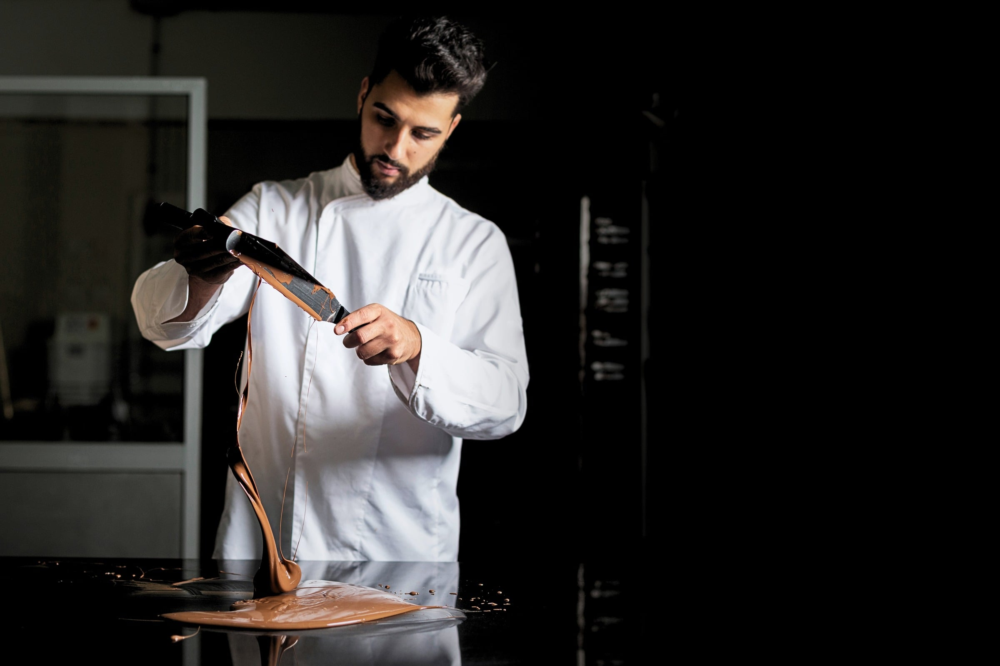
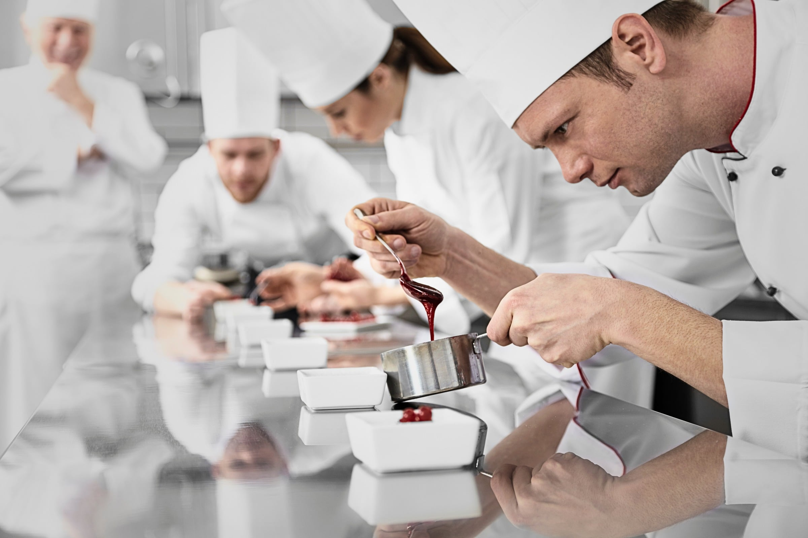
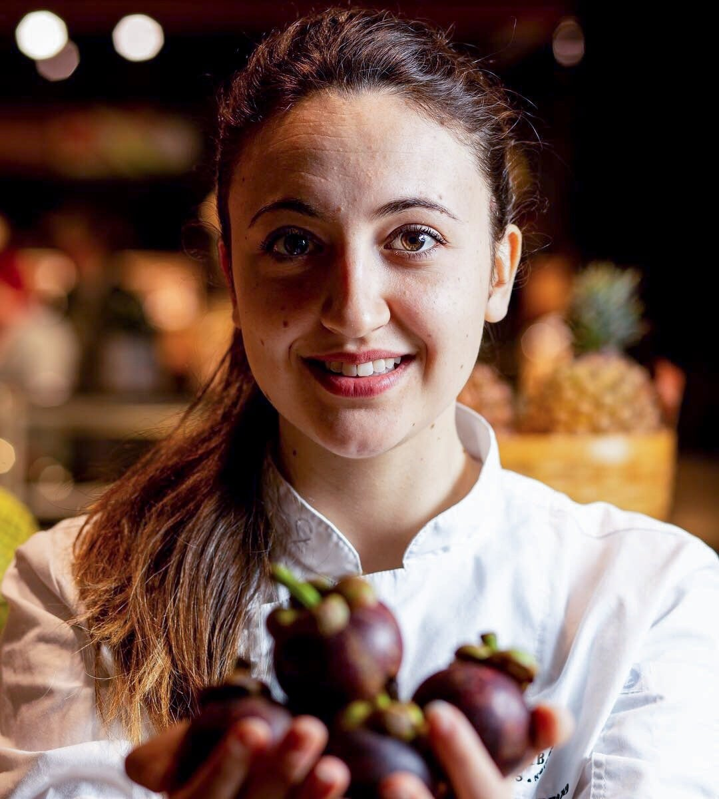
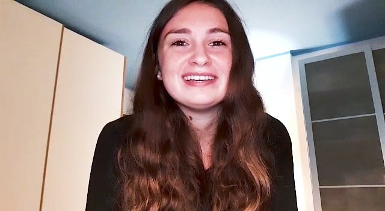
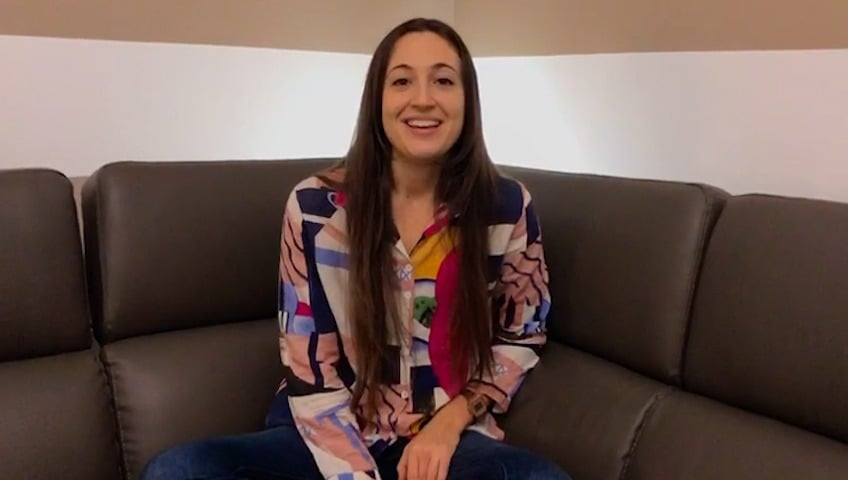
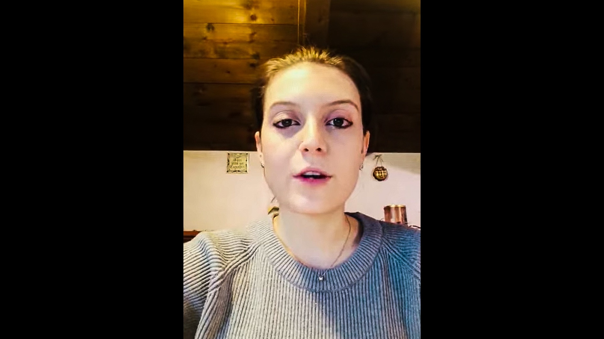
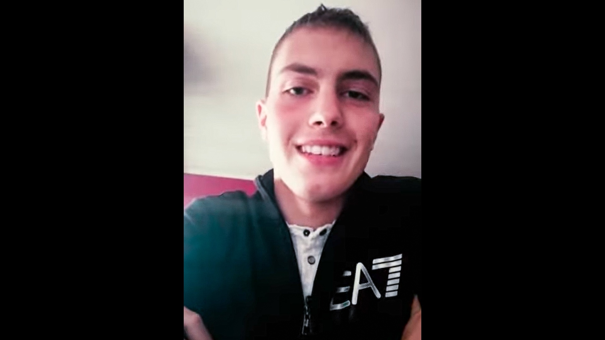
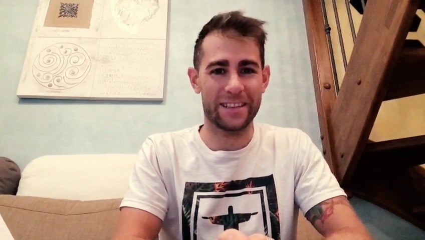

A conclusione del percorso quinquennale, il diplomato in “Enogastronomia e ospitalità alberghiera - Arte Bianca e Pasticceria” possiede specifiche competenze tecnico-pratiche, organizzative e gestionali nell’intero ciclo di produzione, erogazione e commercializzazione dei prodotti e dei servizi della filiera ed è in grado di intervenire nella valorizzazione, produzione, trasformazione, conservazione e presentazione dei prodotti enogastronomici dolciari e da forno secondo gli aspetti culturali, artistici e del Made in Italy in relazione al territorio. È inoltre in grado di controllare la qualità del prodotto sotto il profilo organolettico, igienico e nutrizionale, applicando le normative di sicurezza e tracciabilità, di adeguare le produzioni alla domanda del mercato valorizzando le tradizioni locali e le innovazioni del settore e di collaborare ai processi produttivi artigianali e industriali contribuendo allo sviluppo e alla promozione delle eccellenze territoriali.

Il titolo permette l’accesso a tutte le facoltà universitarie, offrendo allo studente la possibilità di proseguire gli studi in base alle proprie aspirazioni e obiettivi professionali.
Consente inoltre l’iscrizione ai percorsi ITS (Istituti Tecnici Superiori), scuole post-diploma che propongono una formazione tecnica avanzata in collaborazione con il mondo del lavoro, attive anche nei settori agroalimentare e turistico.
Il diploma consente l’inserimento qualificato nel settore della produzione dolciaria e dei prodotti da forno, sia in laboratori artigianali come pasticcerie e panifici, sia in realtà industriali dedicate alla sperimentazione e allo sviluppo di nuovi prodotti alimentari, oltre che nei settori della ristorazione e delle strutture ricettive. Le competenze acquisite rendono i diplomati figure professionali apprezzate e richieste, capaci di inserirsi rapidamente nel mondo del lavoro e di contribuire alla qualità e all’innovazione del settore.

Preziose testimonianze di alcuni allievi che hanno
frequentato l'Arte Bianca
Le testimonianze dirette dei nostri ex allievi sono il racconto più autentico del valore della formazione all’Arte Bianca. Attraverso le loro voci emergono esperienze genuine, storie di crescita personale e professionale che mostrano quanto il percorso vissuto a scuola possa aprire strade concrete e ricche di soddisfazioni.






Sede dell'IISS Piera Cillario Ferrero tel: 0173/441944 / Indirizzo: Via Balbo, 8 - Alba
Sede associata di Neive tel: 0173/67168 / Indirizzo: Via Rocca, 10
Sito istituzionale www.cillarioferrero.edu.it
E-mail: artebiancaneive@cillarioferrero.it